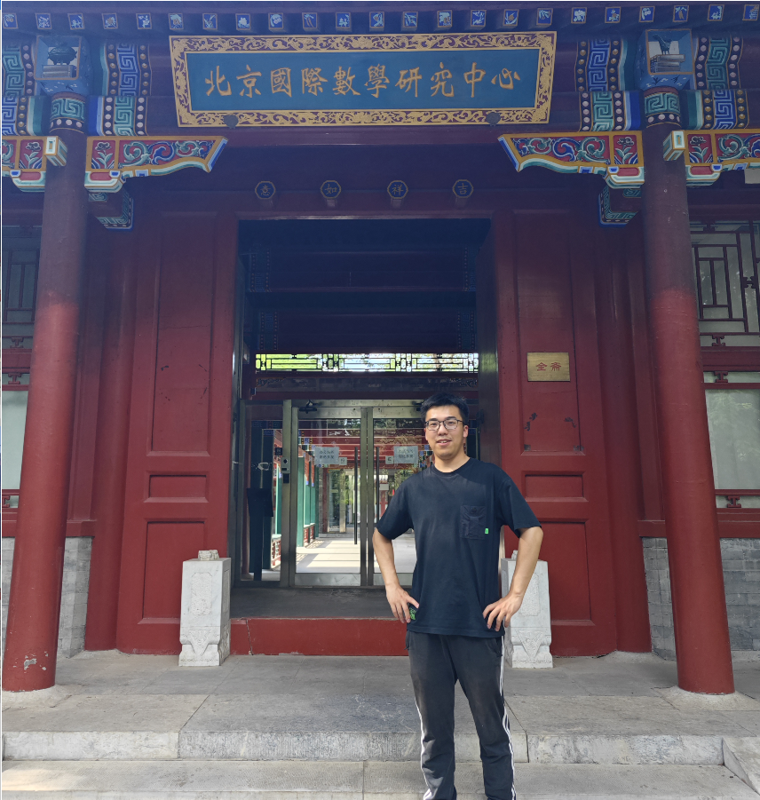

韦杰(Wei Jie)
English Version
我叫韦杰，来自湖南湘西，高中毕业于湘西州民族中学，现是一名西南交通大学数学学院的2020级本科生，攻读专业为数学与应用数学。
我的本科导师是西南交通大学数学学院的李从辉老师和张航老师。
目前，我已保送至南方科技大学数学系攻读硕士研究生，方向为基础数学中的算术代数几何、代数拓扑及表示论方向。
我的兴趣和研究方向主要涉及以下方面：
-
代数: 有限群及李群的表示；代数数论，尤其是类域论和Galois上同调理论；代数表示论和同调代数。
-
拓扑: 代数拓扑，尤其是motivic同伦论；几何拓扑以及拓扑学在经济学中的应用。
-
逻辑: 集合论, 模型论，尤其是它们在统计学模型，理论计算机以及数论上的应用。
-
经管: 金融风险度量、货币金融学、行为金融学、保险数学。
我的本科毕业设计为紧群的表示, 指导老师为杨中维老师。
学术经历
-
2022/07/10-2022/07/15 线下参加天元数学西南中心段海豹老师的代数拓扑暑期短课。
-
2022/05--2023/04 主持大学生创新创业科研项目<<模论与有限群常表示特征标理论>>, 项目导师：李从辉。
-
项目被评为西南交通大学大学生创新创业（SRTP）优秀科研项目。
-
研究了PID上有限生成模的结构定理及其在有限Abel群分类的应用。
-
研究了模的范畴，Abel范畴以及基本同调代数。
-
利用有限群特征标理论证明及推广了Burnside定理和Frobenius定理。
-
利用Burnside定理与置换表示对100阶以内的群进行分类，尤其关注其可解性和单性。
-
每次讨论班的讲稿用Latex整理成了一本完整的讲义。
-
2023/03-2023/05 参加四川大学卢明教授李理论的讨论班。
-
2023/03 参加四川大学2023年逻辑学Logic Workshop会议。
-
主要听取了一些报告，主要有关模型论、递归论及其在非标准分析和统计的应用。
-
2023/05 参加四川大学代数、数论与组合系列论坛，听了欧阳毅教授算术几何的报告。
-
2023/06 在厦门大学参加天元数学东南中心刘青教授的Mordell-Weil Theorem 短课程。
-
2023/07 参加南方科技大学数学系全国优秀大学生夏令营活动，并获得优秀营员。
-
2023/07 参加北京师范大学数学科学学院全国优秀大学生夏令营，并以代数组第六名获得优秀营员。
-
2023/07 参加北京理工大学数学与统计学院全国优秀大学生夏令营，并获得优秀营员。
-
2023/07 参加华东师范大学数学科学学院全国优秀大学生夏令营，并以综合排名第一名获得优秀营员。
-
2023/10 参加西南交通大学数学学院李代数与顶点算子代数报告，分别听取了董崇英教授、苏育才教授和芮和兵教授的学术报告。
获奖经历
-
2021年 朴新教育奖学金
-
2021年 西南交通大学三好学生
-
2022年 西南交通大学综合一等奖学金
-
2022年 西南交通大学三好学生
-
2022年 全国大学生市场调研大赛省级一等奖
-
西南交通大学第十二届数学文化节之优秀数学笔记作业二等奖
-
大学生创新创业项目（SRTP）“模论及有限群常表示特征标理论”校级优秀项目
-
2024年 西南交通大学出版社一等奖学金
-
2024年 四川省优秀毕业生
-
2024年 西南交通大学明诚奖
实习经历:
-
2023/12/01-2023/12/30 兴业数字金融服务(上海)有限股份公司, 企金与项目研发中心, 机构业务研发团队, C语言工程师（实习生）。
-
加入机构与业务研发团队，参与多行业资金监管项目。主要负责接口文档的梳理工作，涉及到农民工工资代发和建筑业资金监管系统、预售房和存量房等房地产交易资金监管系统以及住房租赁交易资金监管系统。
-
参与数据库结构的设计与数据库的搭建工作，尤其是系统需求分析，逻辑结构设计和概念结构设计。
-
日常数据库的维护工作，尤其是对并发（事物）的限制和解控、数据清理和数据格式的规范化，从而保证数据库系统的完整性和安全性。
-
2020/12-2022/09 湖南省三陶教育有限公司, 高中数学助教（兼职）。
-
2023/09-2024/06 西南交通大学数学学院，2023级大数据科学与技术专业助教。
技能证书:
-
英语四级证书(504); 英语六级证书(498)
-
国家普通话二级乙等证书
-
中华人民共和国机动车驾驶证(C1类)
-
国家教师资格证笔试通过
|